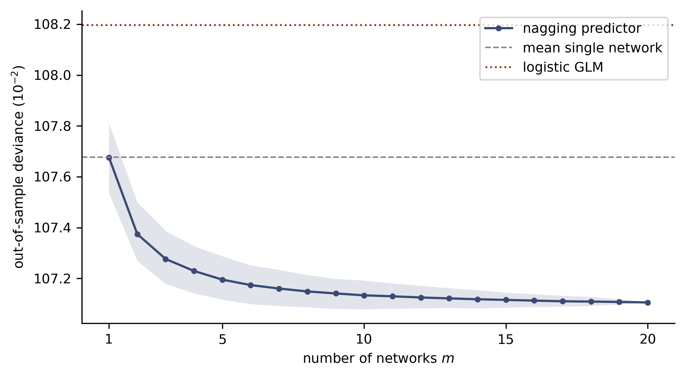
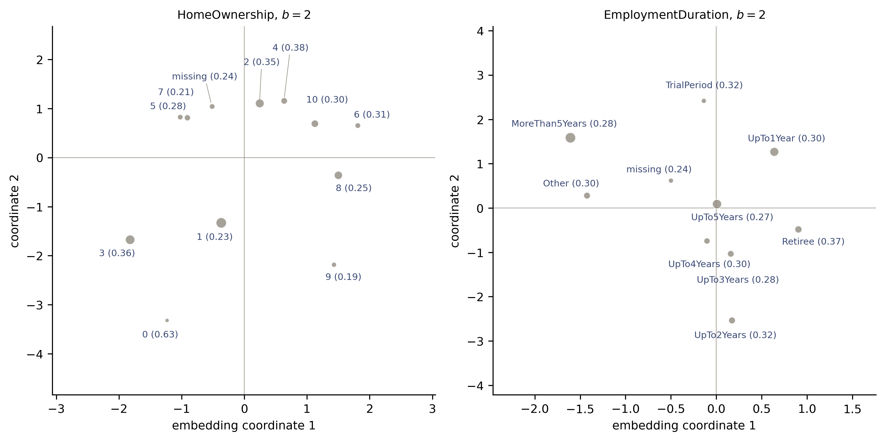

Deep Learning for Actuarial Modelling: a credit risk companion
Author
Mario Ervedosa, adapting Scognamiglio, Maggi and Wüthrich
Published
September 1, 2026
Abstract
Lecture 6 of Deep Learning for Actuarial Modeling has two halves, and this companion keeps both. Network ensembling, which the course calls nagging, averages the randomness out of stochastic gradient descent, and on the Bondora book twenty averaged networks buy as much out-of-sample deviance as moving from the logistic GLM to a network bought in the first place. Averaging leaves the balance property exactly where it found it, which is provable rather than merely observed. The second half is covariate engineering, where credit modelling already has a settled answer: weight of evidence is the course’s target encoding moved onto the log-odds scale, and the Buehlmann credibility the course prescribes is the smoothing every scorecard team applies. We compare five encodings of a 328-level cell on a fixed readout, measure what a leaked encoding is worth, fit an entity-embedding network, and test whether proximity in the learned embedding tracks similarity in risk.
Introduction
Two loose ends were left hanging at the close of the fourth and fifth credit lecture. Refitting the same network on the same data from a different random initialisation moved the out-of-sample deviance around by a tenth of a point or so, which is estimation noise with no statistical content, and the network gave up the balance property that the canonical-link GLM held exactly. Lecture 6 of the course addresses the first directly through ensembling. Its second half turns to covariate engineering, which is where a credit modeller arrives with more prior practice than the course assumes, because scorecard development has been encoding categorical covariates for forty years and has a name for the course’s target encoding.
The plan follows the source deck. We first set out why stochastic gradient descent solutions are non-unique, define the ensemble and nagging predictors, and fit twenty networks to the Bondora modelling table to see how many are needed. We then measure what averaging does to calibration in the large, where the answer is provable in one line and contradicts the course’s own results table. The second half works through ordinal coding, one-hot encoding, dummy coding, target encoding, credibilitised target encoding and entity embedding, comparing five of them on a fixed logistic readout over a deliberately high-cardinality cell. The lecture closes on continuous covariates and on the tensor structure that the attention lectures will need.
Imports and shared settings
import timeimport numpy as npimport pandas as pdimport polars as plimport torchimport statsmodels.api as smimport statsmodels.formula.api as smfimport matplotlib.pyplot as pltfrom scipy.stats import spearmanrfrom sklearn.metrics import roc_auc_scoreBLUE, RED, GREY ="#3B4A75", "#8C2F1E", "#8A8377"plt.rcParams.update({"figure.dpi": 150, "font.size": 9,"axes.spines.top": False, "axes.spines.right": False})
1 Network ensembling
1.1 Several elements of randomness
A fitted network is not a function of the learning sample alone. Holding the architecture and the fitting procedure fixed, the course lists four sources of randomness that still move the answer, i.e. the initialisation \(\vartheta^{[0]}\) from which gradient descent starts, the partition of the data into learning sample \(\mathcal{L}\) and test sample \(\mathcal{T}\), the partition of \(\mathcal{L}\) into training sample \(\mathcal{U}\) and validation sample \(\mathcal{V}\), and the composition of the mini-batches \((\mathcal{U}_k)_{k=1}^{\lfloor n/s \rfloor}\). Dropout adds a fifth. Consequently the early-stopped solution is highly non-unique, and on a finite learning sample there are infinitely many equally good fitted models.
The course calls this troublesome in actuarial work, and in credit risk the trouble has a specific institutional shape. A rating system under the internal ratings based approach is documented, validated and approved as a single object, and the annual validation cycle then asks whether this year’s estimates differ materially from last year’s. Where a refit on identical data can move a portfolio’s estimated PD by a tenth of a deviance point for no reason a validator can name, the difference between model drift and seed drift has to be established before anything else can be. Hence a credit team needs the run-to-run variation quantified rather than merely acknowledged.
1.2 The ensemble predictor
Take \(M\) predictors \((\widehat{\mu}_j)_{j=1}^M\) that are conditionally independent and identically distributed given the learning sample, and average them into the ensemble predictor \[
\widehat{\mu}^{(M)} = \frac{1}{M} \sum_{j=1}^M \widehat{\mu}_j .
\] The estimation uncertainty of the average obeys \[
\sqrt{\mathrm{Var}\!\left(\widehat{\mu}^{(M)}\right)}
= \frac{1}{\sqrt{M}}\,\sqrt{\mathrm{Var}\!\left(\widehat{\mu}_1\right)}
~\longrightarrow~ 0 \qquad \text{for } M \to \infty .
\] Averaging therefore shrinks the fluctuation of the predictor by \(\sqrt{M}\). Two cautions belong with that statement. First, the \(\sqrt{M}\) rate applies to the standard deviation of the predictor and not to the loss, so the out-of-sample deviance of the ensemble approaches its infinite-ensemble limit with the remaining gap closing at a faster rate, since deviance is locally quadratic in the prediction error. Second, the result says nothing whatever about bias. Where every member of the ensemble is systematically wrong in the same direction, the average is systematically wrong by the same amount, and the section on the balance property below is that caution made concrete.
1.3 The nagging predictor
Bagging, introduced by Breiman (1996) for regression trees, combines bootstrap resampling with aggregation. Network fitting needs no bootstrap, because the four elements of randomness already deliver as many distinct solutions as one cares to fit. Dietterich (2000a, 2000b) studied network ensembling generally, and Richman and Wüthrich (2020) brought it into actuarial work under the name nagging, for network aggregating.
Given the learning sample \(\mathcal{L} = (Y_i, \boldsymbol{X}_i)_{i=1}^n\), fit \(M\) networks whose randomness differs only in those elements. This yields \(M\) conditionally i.i.d. fitted networks \((\mu_{\widehat{\vartheta}_j})_{j=1}^M\) given \(\mathcal{L}\), and the nagging predictor is their average, \[
\widehat{\mu}^{\rm nagg}_M(\boldsymbol{X})
= \frac{1}{M} \sum_{j=1}^M \mu_{\widehat{\vartheta}_j}(\boldsymbol{X}) .
\]
The conditioning matters for the implementation. The training routine inherited from the fourth and fifth lecture draws the \(\mathcal{U}\) and \(\mathcal{V}\) partition, the weight initialisation and the mini-batch order from one seed, and the learning and test split is made once outside that routine. Varying only the seed therefore varies exactly the elements the course lists while holding \(\mathcal{L}\) fixed, which is the condition the \(\sqrt{M}\) statement requires.
1.4 Nagging on the Bondora book
The modelling frame, the design matrix and the splits are those of the fourth and fifth lecture, unchanged, so that the numbers chain.
20 networks fitted in 53s; early-stopping epoch ranged 30 to 186 (mean 70.3)
d_ind = np.array([bernoulli_deviance(P_test[j], y_test) for j inrange(M)])a_ind = np.array([roc_auc_score(y_test, P_test[j]) for j inrange(M)])ens_test, ens_learn = P_test.mean(0), P_learn.mean(0)print(f"GLM benchmark, test deviance {glm_test:.3f}")print(f"single networks, test deviance mean {d_ind.mean():.3f} "f"sd {d_ind.std(ddof=1):.3f} range [{d_ind.min():.3f}, {d_ind.max():.3f}]")print(f"single networks, test AUC mean {a_ind.mean():.4f} "f"sd {a_ind.std(ddof=1):.4f} range [{a_ind.min():.4f}, {a_ind.max():.4f}]")print(f"nagging predictor M={M}, deviance {bernoulli_deviance(ens_test, y_test):.3f}"f" AUC {roc_auc_score(y_test, ens_test):.4f}")
GLM benchmark, test deviance 108.197
single networks, test deviance mean 107.677 sd 0.116 range [107.502, 107.937]
single networks, test AUC mean 0.7231 sd 0.0009 range [0.7217, 0.7247]
nagging predictor M=20, deviance 107.105 AUC 0.7269
The result is worth pausing on. A single network averages 107.677 in out-of-sample deviance across the twenty seeds, and the nagging predictor reaches 107.105, an improvement of 0.57 points. Moving from the logistic GLM to a single network, which was the whole subject of the previous lecture, was worth 108.197 against that same 107.677, or 0.52 points. Ensembling therefore buys slightly more on this book than the change of model class bought, and it buys it with no new covariates, no new architecture and no additional hyper-parameter. The AUC tells the same story more quietly, moving from 0.7231 on average to 0.7269.
The spread across seeds also quantifies the non-uniqueness that the previous lecture only sampled twice. Twenty fits span 107.502 to 107.937 in test deviance, a range of 0.44 points, which is more than four fifths of the entire GLM-to-network gap. Early stopping fired anywhere between epoch 30 and epoch 186. Hence reporting a single network’s out-of-sample loss to three decimal places, as this series has been doing, overstates what one fit establishes, and the honest object to report is the ensemble.
1.5 How many networks do we need?
The course answers roughly ten to twenty from its French motor third-party liability example. To ask the same question here we average the first \(m\) of the stored prediction vectors for \(m = 1, \ldots, 20\). That cumulative average depends on the order in which the twenty fits happen to arrive, so we average the whole curve over five hundred random orderings and show the central eighty per cent of the spread.
R =500rp = np.random.default_rng(11)curve = np.zeros((R, M))for r inrange(R): order = rp.permutation(M) cum = np.cumsum(P_test[order], axis=0) / np.arange(1, M +1)[:, None] curve[r] = [bernoulli_deviance(cum[k], y_test) for k inrange(M)]cm = curve.mean(0)lo, hi = np.percentile(curve, [10, 90], axis=0)fig, ax = plt.subplots(figsize=(6.5, 3.6))ms = np.arange(1, M +1)ax.fill_between(ms, lo, hi, color=BLUE, alpha=0.15, lw=0)ax.plot(ms, cm, color=BLUE, marker="o", ms=3, label="nagging predictor")ax.axhline(d_ind.mean(), color=GREY, ls="--", lw=1, label="mean single network")ax.axhline(glm_test, color=RED, ls=":", lw=1.2, label="logistic GLM")ax.set_xlabel("number of networks $m$")ax.set_ylabel(r"out-of-sample deviance ($10^{-2}$)")ax.set_xticks([1, 5, 10, 15, 20])ax.legend(loc="upper right")plt.tight_layout(); plt.show()for k in [0, 1, 2, 4, 9, 14, 19]:print(f" m = {k+1:2d}{cm[k]:.3f} [{lo[k]:.3f}, {hi[k]:.3f}]")

Out-of-sample Bernoulli deviance of the nagging predictor as a function of the ensemble size \(m\), our counterpart of the course’s nagging plot. The line is the mean over 500 random orderings of the 20 fitted networks and the band spans the 10th to 90th percentile of that spread; both collapse to a point at \(m=20\), where every ordering gives the same average. The GLM benchmark and the mean single network are marked for reference.
m = 1 107.676 [107.536, 107.810]
m = 2 107.374 [107.269, 107.499]
m = 3 107.276 [107.178, 107.387]
m = 5 107.195 [107.117, 107.287]
m = 10 107.133 [107.079, 107.192]
m = 15 107.116 [107.085, 107.145]
m = 20 107.105 [107.105, 107.105]
Most of the gain arrives early. Two networks recover 107.374, five recover 107.195, and ten reach 107.133 against the 107.105 that twenty deliver, so the second ten networks are worth 0.03 points between them. The course’s recommendation of \(M \in \{10, 20\}\) transfers to this book without adjustment, and the practical reading for a credit team is that ensembling is cheap. Twenty fits took under two minutes here, and the resulting predictor is both better and reproducible in a sense a single fit is not.
1.6 What nagging does not fix
Calibration in the large is the property the second lecture proved for the canonical-link GLM, whose fitted PDs sum exactly to the observed defaults on the learning sample. The previous lecture watched a single network give it up. One might hope that averaging repairs it, and the course’s own results table encourages the hope, since its nagging predictor sits at a balance of 7.36 per cent, exactly the portfolio figure that the null model and the GLM achieve, where its single network sits at 7.17.
Averaging cannot do that, and the reason is one line of arithmetic. The mean of the ensemble’s predictions is the mean of the individual means, \[
\frac{1}{n}\sum_{i=1}^n \widehat{\mu}^{\rm nagg}_M(\boldsymbol{X}_i)
= \frac{1}{M}\sum_{j=1}^M \left(
\frac{1}{n}\sum_{i=1}^n \mu_{\widehat{\vartheta}_j}(\boldsymbol{X}_i)
\right),
\] so the ensemble’s balance error is the average of the individual balance errors. Averaging removes the part of that error which varies from fit to fit, and leaves the part every fit shares.
b_ind = P_learn.mean(axis=1)obs = y_learn.mean()rel = (b_ind / obs -1) *100rel_ens = (ens_learn.mean() / obs -1) *100print(f"observed learning-sample default rate {obs:.5f}")print(f"single networks, mean predicted PD mean {b_ind.mean():.5f} "f"sd {b_ind.std(ddof=1):.5f} range [{b_ind.min():.5f}, {b_ind.max():.5f}]")print(f"single networks, relative balance miss mean {rel.mean():+.3f}% "f"largest in absolute value {np.abs(rel).max():.3f}%")print(f"nagging predictor, mean predicted PD {ens_learn.mean():.5f} "f"relative balance miss {rel_ens:+.3f}%")
observed learning-sample default rate 0.28878
single networks, mean predicted PD mean 0.28755 sd 0.00295 range [0.28153, 0.29259]
single networks, relative balance miss mean -0.424% largest in absolute value 2.509%
nagging predictor, mean predicted PD 0.28755 relative balance miss -0.424%
Relative balance miss on the learning sample for each of the 20 networks (dots) and for the nagging predictor (solid line), as a percentage of the observed default rate. Exact balance is the dashed line at zero. Averaging collapses the dispersion, which spans -2.5 to +1.3 per cent across seeds, onto the common systematic component of -0.42 per cent, which it leaves untouched.
The measurement matches the algebra exactly. Individual networks miss the observed default count by anything from \(-2.51\) to \(+1.32\) per cent, a dispersion of about one percentage point in standard deviation, and their average miss is \(-0.42\) per cent. The nagging predictor misses by \(-0.42\) per cent. Ensembling has removed the seed-to-seed dispersion in calibration, which is a real gain for a validator who has to explain why this year’s number differs from last year’s, and it has left the systematic understatement precisely where it was.
Consequently the course’s table showing the nagging predictor exactly on the portfolio figure cannot be averaging alone. The most likely explanation is that a balance correction was applied on top, which their lecture notes discuss under bias regularisation; this is inference from the published numbers rather than something the deck states. Either way, the reading for credit is the one the third lecture reached from the other direction. Where the balance property matters, and under the internal ratings based approach it is a supervisory expectation rather than a preference, it has to be imposed deliberately. The cheapest instrument remains an intercept recalibration on the learning sample, which is the degenerate combined actuarial neural network of the third lecture, and it composes with nagging without disturbing the ranking.
2 Categorical covariates
2.1 The levels a credit portfolio presents
Categorical covariates, whether nominal or ordinal, have to be brought into numerical form before any regression can use them. The course runs its examples on a six-level profession variable. The Bondora book offers the following, counted on the modelling frame.
for c in CATS + ["Occupation"]: vc = g[c].value_counts() rate = y_all.groupby(g[c]).mean() tiny = vc.index[-1]print(f"{c:20s} K = {len(vc):2d} smallest level '{tiny}' "f"n = {vc[tiny]:5d}, default rate {rate[tiny]:.3f}")
Country K = 4 smallest level 'SK' n = 296, default rate 0.706
Education K = 5 smallest level '2' n = 6436, default rate 0.321
HomeOwnership K = 12 smallest level '0' n = 38, default rate 0.632
VerificationType K = 4 smallest level '2' n = 1826, default rate 0.280
EmploymentDuration K = 10 smallest level 'TrialPeriod' n = 751, default rate 0.316
Occupation K = 21 smallest level '0' n = 3, default rate 1.000
Two observations shape everything that follows. First, the cardinalities match the course’s own example closely, since its French motor data embeds a vehicle brand with eleven levels and a region with twenty-two, against home ownership with twelve here and occupation area with twenty-one. Second, Occupation has a level carrying three accounts, all three of which defaulted. An encoding that maps a level to its observed default rate will map that level to \(1\), and the second lecture already met this as quasi-complete separation. The credibility machinery below exists for exactly this cell.
The genuine high-cardinality case cannot be reproduced on this data, and the reason is worth recording. Bondora redacts City, County and EmploymentPosition entirely in the public export, so every value is null. Geography is the canonical high-cardinality credit covariate and the one that motivates Richman and Wüthrich (2024) on regularising high-cardinality categoricals in network regressions. In its absence we construct a high-cardinality cell below by crossing three of the covariates we do have, which is also what a scorecard developer does when a segment needs finer treatment than any single field provides.
2.2 Ordinal coding, one-hot encoding and dummy coding
For genuinely ordered levels \((a_k)_{k=1}^K\) the course uses a one-dimensional entity embedding by rank, \[
X \in \mathcal{A} ~\mapsto~ \sum_{k=1}^K k\, \mathbf{1}_{\{X = a_k\}}
\in \mathbb{R} ,
\] and notes that an alphabetical ordering, which its running example happens to carry, is risk-insensitive and therefore not useful. The warning is well taken and slightly too strong, as the measurement below shows.
One-hot encoding sends each level to a basis vector of \(\mathbb{R}^K\), \[
X \in \mathcal{A} ~\mapsto~
\left(\mathbf{1}_{\{X = a_1\}}, \ldots, \mathbf{1}_{\{X = a_K\}}\right)^\top ,
\] which is redundant, since the first \(K-1\) components determine the last. Dummy coding picks a reference level and measures the others against it, giving full rank in \(\mathbb{R}^{K-1}\). Both become sparse as \(K\) grows, which is a numerical problem for gradient descent and a statistical one for the GLM: a level with three accounts gets its own parameter, fitted on three observations.
Our design matrix has used one-hot encoding for the network and dummy coding inside the GLM formula throughout the series, and at these cardinalities both are perfectly serviceable. The interesting behaviour starts higher up.
2.3 Target encoding is weight of evidence
The course introduces target encoding as a device mainly used for regression trees. Given the sample \((Y_i, X_i)_{i=1}^n\) with categorical \(X_i \in \mathcal{A}\), compute the level means \[
\overline{y}_k = \frac{\sum_{i=1}^n Y_i \mathbf{1}_{\{X_i = a_k\}}}
{\sum_{i=1}^n \mathbf{1}_{\{X_i = a_k\}}}
\] and use them as if they were ordinal labels. The course flags three weaknesses, i.e. that the encoding ignores interactions with the other covariates, that it is unreliable on scarce levels, and that it can leak information.
Credit modelling reached this device independently and calls it weight of evidence. Standard scorecard practice replaces each level by \[
\mathrm{WoE}_k = \log \frac{\overline{y}_k / (1 - \overline{y}_k)}
{\overline{y} / (1 - \overline{y})} ,
\] the log of the level’s default odds relative to the portfolio’s, where \(\overline{y}\) is the overall default rate. The conventional industry definition uses the good-to-bad ratio and therefore carries the opposite sign; the form above keeps the sign of risk and changes nothing else.
That log-odds transformation is the substantive difference from the course’s \(\overline{y}_k\), and under a logit link it is the right functional form. A logistic regression models \(\mathrm{logit}(p) = \beta_0 + \beta^\top \boldsymbol{x}\), so a covariate already expressed as a log-odds shift enters linearly and a single coefficient near unity reproduces the level’s marginal effect exactly. Feed \(\overline{y}_k\) in on the probability scale and the same coefficient has to approximate a logit through a linear function, which it can only do locally. Hence weight of evidence is not merely a credit convention but a change of scale that matches the link, and it is why scorecards built on WoE-transformed characteristics behave so predictably.
The cost of the log-odds scale is that it is unbounded. Where \(\overline{y}_k\) reaches \(0\) or \(1\), as it does for the three-account occupation level, the WoE diverges. The course’s next section is the remedy.
2.4 Credibilitised target encoding
Following Micci-Barreca (2001) and Bühlmann (1967), shrink each level mean towards the global mean in proportion to how much data stands behind it, \[
\overline{y}^{\rm cred}_k = \alpha_k \overline{y}_k
+ \left(1 - \alpha_k\right) \overline{y},
\qquad
\alpha_k = \frac{n_k}{n_k + \tau} \in (0, 1],
\] where \(n_k\) counts the observations on level \(a_k\) and the shrinkage parameter \(\tau \ge 0\) is a hyper-parameter. A level with \(n_k \gg \tau\) keeps its own mean and a level with \(n_k \ll \tau\) is replaced by the portfolio mean. Setting \(\tau = 0\) recovers raw target encoding.
Credit teams generally reach the same place by a blunter route, enforcing a minimum bin size during characteristic binning and merging any level that falls below it into a neighbour. Merging is easier to document and loses the level’s identity; credibility keeps the identity and borrows strength. The two are complements, and the Bühlmann form has the advantage that \(\tau\) is a single number a validator can challenge.
Our test bed is a deliberately high-cardinality cell, formed by crossing country, education and occupation area.
cell = (g["Country"] +"|"+ g["Education"] +"|"+ g["Occupation"]).to_numpy()BASE = np.column_stack([g["AgeCens"], g["logIncome"], g["NewCreditCustomer"].astype(float)])n_cell = pd.Series(y_learn).groupby(cell[idx_learn]).count()print(f"levels of the cell: {len(set(cell))} overall, "f"{len(n_cell)} present in the learning sample")print(f"learning-sample levels with fewer than 10 accounts: {(n_cell <10).sum()}, "f"fewer than 30: {(n_cell <30).sum()}")
levels of the cell: 328 overall, 324 present in the learning sample
learning-sample levels with fewer than 10 accounts: 100, fewer than 30: 161
The shrinkage is applied on the log-odds scale, which is where the readout wants it.
def cell_encoding(fit_idx, tau, kind="woe"):"""Level map for the cell, estimated on `fit_idx` only.""" yb, cb = y_all.iloc[fit_idx].to_numpy(), cell[fit_idx] grand = yb.mean() s = pd.Series(yb).groupby(cb).agg(["sum", "count"]) ybar = s["sum"] / s["count"] alpha = s["count"] / (s["count"] + tau) cred = alpha * ybar + (1- alpha) * grandif kind =="target":return cred, grand logit =lambda p: np.log(np.clip(p, 1e-9, 1-1e-9)/ np.clip(1- p, 1e-9, 1-1e-9))return logit(cred) - logit(grand), 0.0def readout(label, z_fit, z_eval, fit_idx, eval_idx, verbose=True):"""Logistic GLM on the three continuous covariates plus the encoded cell.""" A = sm.add_constant(np.column_stack([BASE[fit_idx], z_fit])) B = sm.add_constant(np.column_stack([BASE[eval_idx], z_eval])) fit = sm.GLM(y_all.iloc[fit_idx], A, family=sm.families.Binomial()).fit() d_in = bernoulli_deviance(fit.predict(A), y_all.iloc[fit_idx]) d_out = bernoulli_deviance(fit.predict(B), y_all.iloc[eval_idx]) auc = roc_auc_score(y_all.iloc[eval_idx], fit.predict(B))if verbose:print(f" {label:34s} in-sample {d_in:7.3f} test {d_out:7.3f} "f"AUC {auc:.4f} parameters {A.shape[1]}")return d_outdef encode(mp, default, idx):return pd.Series(cell[idx]).map(mp).fillna(default).to_numpy()
The shrinkage parameter is selected on a validation slice carved out of the learning sample, with both the encoding and the GLM fitted on the remaining ninety per cent. Selecting \(\tau\) on the test sample would be the same offence the series has been warning about since the second lecture.
p = np.random.default_rng(3).permutation(len(idx_learn))cutoff =int(0.9*len(p))U, V = idx_learn[p[:cutoff]], idx_learn[p[cutoff:]]TAUS = [0, 1, 2, 5, 10, 20, 50, 100, 300, 1000]val_dev, test_dev = [], []for tau in TAUS: mp, dflt = cell_encoding(U, float(tau)) val_dev.append(readout(f"tau={tau}", encode(mp, dflt, U), encode(mp, dflt, V), U, V, verbose=False)) mp, dflt = cell_encoding(idx_learn, float(tau)) test_dev.append(readout(f"tau={tau}", encode(mp, dflt, idx_learn), encode(mp, dflt, idx_test), idx_learn, idx_test, verbose=False))tau_star = TAUS[int(np.argmin(val_dev))]print(f"selected tau* = {tau_star} "f"(validation deviance {min(val_dev):.3f} on n = {len(V):,})")
selected tau* = 5 (validation deviance 107.773 on n = 11,894)
Selection of the credibility parameter \(\tau\) for the 328-level cell. The validation curve is the selection criterion, computed with both the encoding and the GLM fitted on \(\mathcal{U}\) and evaluated on the held-out \(\mathcal{V}\). The test curve is shown afterwards to confirm the choice was not lucky; it played no part in choosing \(\tau^*\). Both curves rise steeply towards \(\tau = 0\), where scarce levels keep their raw log-odds, and drift up beyond \(\tau \approx 20\) as real signal is shrunk away.
2.5 The encodings compared
Five encodings of the same cell now go through one fixed readout, a logistic GLM on age, log-income, the new-customer flag and the encoded cell. Holding the readout fixed isolates the encoding, which is the same device the third lecture used to compare representations.
readout: logistic GLM, 328-level cell, test sample n = 29,734
no cell at all in-sample 117.385 test 117.959 AUC 0.6106 parameters 4
ordinal, alphabetical index in-sample 113.539 test 114.402 AUC 0.6626 parameters 5
dummy coding in-sample 107.139 test 110.351 AUC 0.7086 parameters 327
raw target encoding in-sample 107.332 test 109.432 AUC 0.7082 parameters 5
weight of evidence in-sample 107.203 test 110.199 AUC 0.7080 parameters 5
credibilitised WoE, tau=5 in-sample 107.294 test 109.339 AUC 0.7082 parameters 5
np.float64(109.33894419437505)
Four readings come out of that table, and one of them cuts against the course.
The cell carries a great deal of information. Dropping it costs 8.6 deviance points and 0.10 of AUC against the best encoding, so this is a covariate worth engineering properly rather than a marginal one.
The alphabetical ordinal encoding, which the course dismisses as risk-insensitive, recovers 3.6 of those points. The explanation is mechanical and instructive. Our cell label begins with the country code, so sorting alphabetically sorts primarily by country, and country is the strongest single driver of default in this book, running from 17.0 per cent in Estonia to 70.6 per cent in Slovakia. An arbitrary ordering is therefore only as risk-insensitive as the label’s construction makes it, and a modeller who reads a real improvement off an alphabetical index has learned something about the labelling scheme rather than about risk.
Dummy coding buys the discrimination and pays for it in overfitting. Its in-sample deviance of 107.139 is the best of any encoding and its test deviance of 110.351 is the worst of the four serious ones, a gap of 3.2 points bought with 327 parameters. Raw target encoding reaches a better test deviance of 109.432 using one column in place of those 327, which is the compression argument for target encoding in its cleanest form.
Weight of evidence without credibility is worse than raw target encoding, at 110.199 against 109.432, and this is where the log-odds scale bites back. A level with no defaults or with nothing but defaults receives an enormous WoE, bounded only by the numerical floor in the code, and a hundred such levels give the readout enormous leverage on almost no data. Raw target encoding is confined to \([0, 1]\) and so degrades gracefully where WoE explodes. Credibility repairs it completely: at \(\tau^* = 5\) the WoE encoding reaches 109.339, the best test deviance in the table, on that same single column. Consequently the log-odds scale is the right one and it is only usable once shrunk, which is precisely why industry practice never applies WoE to an unbinned high-cardinality field.
2.6 Leakage, and why an in-sample check misses it
The course lists leakage as a weakness of target encoding without quantifying it. The quantity is worth knowing, because the mistake is easy to make and its signature is nearly invisible in the place a modeller usually looks. We repeat two encodings with the level means computed on the whole dataset, test sample included, and change nothing else.
LEAKED raw target encoding in-sample 107.381 test 108.960 AUC 0.7108 parameters 5
LEAKED weight of evidence in-sample 107.255 test 108.869 AUC 0.7108 parameters 5
LEAKED credibilitised WoE in-sample 107.322 test 108.966 AUC 0.7105 parameters 5
np.float64(108.96630490066586)
The leak is worth 0.47 deviance points on raw target encoding, moving 109.432 to 108.960, and 1.33 points on weight of evidence, moving 110.199 to 108.869. Both figures are of the same order as the entire gain the previous lecture measured from replacing the GLM with a network. A team that computes its WoE tables on the full development file before splitting therefore manufactures an apparent improvement the size of a genuine model-class upgrade, and it will not survive contact with next quarter’s applications.
Credibility offers no protection, which is worth stating because it is the natural thing to hope. Shrinkage at \(\tau^* = 5\) still moves the test deviance from 109.339 to 108.966 once the level means see the test sample, a leak of 0.37 points. Shrinkage addresses scarcity and leakage is a question of which rows the encoding was allowed to see, so the two failures are independent.
The signature is what makes this dangerous. In-sample deviance moves by no more than 0.06 points under any of the three leaks, and it moves upward, because a level map estimated on the whole dataset fits the learning sample marginally worse than one estimated on the learning sample alone. An in-sample diagnostic therefore shows a leaked model as very slightly the poorer of the two, and no amount of in-sample checking will find this. The only defence is procedural, i.e. the split comes first, every encoding map is estimated inside the learning sample, and the map is stored alongside the scaling constants as part of the model.
2.7 Entity embedding
Entity embedding borrows from natural language processing, following Brébisson et al. (2015), Guo and Berkhahn (2016) and Richman (2021). Choose an embedding dimension \(b \in \mathbb{N}\), typically \(b \ll K\), and learn a map \[
\boldsymbol{e}^{\rm EE}: \mathcal{A} \to \mathbb{R}^b,
\qquad X \mapsto \boldsymbol{e}^{\rm EE}(X),
\] carrying \(b \cdot K\) weights. In a network this is an embedding layer, which is an additional layer that is not fully connected, and its weights are learned by gradient descent along with everything else. The intention the course states is that proximity in \(\mathbb{R}^b\) should reflect similarity in risk behaviour, and the weights need no normalisation because only relative position matters.
Three properties recommend the construction, and the discrimination gain is not reliably one of them. First, parameter economy. One-hot encoding of our five categoricals contributes 35 input columns to the first dense layer, where a \(b = 2\) embedding contributes 10 columns plus 80 embedding weights, the 80 counting the reserved unseen index on each of the five, and the saving grows with \(K\). Second, the levels acquire coordinates that can be inspected, which the next section examines sceptically. Third, and most consequentially for the rest of the course, every covariate lands in the same \(b\)-dimensional space, which is what turns a covariate vector into the tensor an attention layer consumes.
2.8 The embedding network on the Bondora book
Integer level codes must stay out of the scaler, since standardising a code destroys the indexing the embedding layer needs, so the training routine is rebuilt rather than reused. Codes run from \(1\) to \(K\) and index \(0\) is reserved for a level absent from the learning sample, which cannot arise on this random split but would on an out-of-time one.
levmaps = {c: {lv: i +1for i, lv inenumerate(sorted(g[c].iloc[idx_learn].unique()))} for c in CATS}cards = {c: len(levmaps[c]) +1for c in CATS}codes = np.column_stack([g[c].map(levmaps[c]).fillna(0).astype(int).to_numpy()for c in CATS])Xc = g[CONT].astype(float)print("embedding cardinalities, including the reserved unseen index:", cards)
embedding cardinalities, including the reserved unseen index: {'Country': 5, 'Education': 6, 'HomeOwnership': 13, 'VerificationType': 5, 'EmploymentDuration': 11}
Embedding network and its training routine
class EmbedFNN(torch.nn.Module):def__init__(self, n_cont, cards, b=2, widths=(20, 15, 10), seed=7):super().__init__() torch.manual_seed(seed)self.emb = torch.nn.ModuleList([torch.nn.Embedding(k, b) for k in cards]) layers, prev = [], n_cont + b *len(cards)for w in widths: layers += [torch.nn.Linear(prev, w), torch.nn.Tanh()] prev = w layers += [torch.nn.Linear(prev, 1), torch.nn.Sigmoid()]self.head = torch.nn.Sequential(*layers)def forward(self, x_cont, x_cat): parts = [x_cont] + [m(x_cat[:, j]) for j, m inenumerate(self.emb)]returnself.head(torch.cat(parts, dim=1))def train_embed(idx, seed=7, b=2, epochs=500, batch=5000, patience=50): q = np.random.default_rng(seed).permutation(len(idx)) cut =int(0.9*len(q)) tr, va = idx[q[:cut]], idx[q[cut:]] m_hat = Xc.iloc[tr].mean() s_hat = Xc.iloc[tr].std().replace(0, 1.0) pc =lambda i: torch.tensor(((Xc.iloc[i] - m_hat) / s_hat) .to_numpy(dtype=np.float32)) pk =lambda i: torch.tensor(codes[i], dtype=torch.long) Ctr, Ktr, Cva, Kva = pc(tr), pk(tr), pc(va), pk(va) ytr = torch.tensor(y_all.iloc[tr].to_numpy(dtype=np.float32)).unsqueeze(1) yva = torch.tensor(y_all.iloc[va].to_numpy(dtype=np.float32)).unsqueeze(1) model = EmbedFNN(len(CONT), [cards[c] for c in CATS], b=b, seed=seed) opt = torch.optim.NAdam(model.parameters()) bce = torch.nn.BCELoss() gen = torch.Generator().manual_seed(seed) best, best_epoch, best_state = np.inf, 0, Nonefor epoch inrange(1, epochs +1): model.train()for chunk in torch.randperm(len(Ctr), generator=gen).split(batch): opt.zero_grad() bce(model(Ctr[chunk], Ktr[chunk]), ytr[chunk]).backward() opt.step() model.eval()with torch.no_grad(): v =200* bce(model(Cva, Kva), yva).item()if v < best: best, best_epoch = v, epoch best_state = {k: t.clone() for k, t in model.state_dict().items()}if epoch - best_epoch >= patience:break model.load_state_dict(best_state)return model, (m_hat, s_hat), best_epochdef embed_predict(model, scaler, idx): m_hat, s_hat = scalerwith torch.no_grad():return model(torch.tensor(((Xc.iloc[idx] - m_hat) / s_hat) .to_numpy(dtype=np.float32)), torch.tensor(codes[idx], dtype=torch.long)).squeeze(1).numpy()
We fit ten embedding networks, so that the comparison against one-hot encoding is a comparison of nagging predictors at equal \(M\) rather than of two single fits separated by less than the seed noise.
ME =10PE_test = np.zeros((ME, len(idx_test)))PE_learn = np.zeros((ME, len(idx_learn)))emb_models, emb_stops = [], []t0 = time.time()for j inrange(ME): model, scaler, stop = train_embed(idx_learn, seed=100+ j) PE_test[j] = embed_predict(model, scaler, idx_test) PE_learn[j] = embed_predict(model, scaler, idx_learn) emb_models.append(model) emb_stops.append(stop)n_par =sum(p.numel() for p in emb_models[0].parameters())n_emb =sum(p.numel() for p in emb_models[0].emb.parameters())print(f"{ME} embedding networks fitted in {time.time() - t0:.0f}s; "f"early stopping between epochs {min(emb_stops)} and {max(emb_stops)}")print(f"parameters {n_par:,}, of which {n_emb} are embedding weights, "f"against 1,266 for the one-hot network")
10 embedding networks fitted in 68s; early stopping between epochs 84 and 207
parameters 846, of which 80 are embedding weights, against 1,266 for the one-hot network
de = np.array([bernoulli_deviance(PE_test[j], y_test) for j inrange(ME)])ae = np.array([roc_auc_score(y_test, PE_test[j]) for j inrange(ME)])oh10 = P_test[:ME].mean(0)em10 = PE_test.mean(0)print(f"one-hot, single: deviance mean {d_ind[:ME].mean():.3f} "f"sd {d_ind[:ME].std(ddof=1):.3f} AUC mean {a_ind[:ME].mean():.4f}")print(f"embedding, single: deviance mean {de.mean():.3f} "f"sd {de.std(ddof=1):.3f} AUC mean {ae.mean():.4f}")print(f"one-hot, nagged M={ME}: deviance {bernoulli_deviance(oh10, y_test):.3f}"f" AUC {roc_auc_score(y_test, oh10):.4f}")print(f"embedding, nagged M={ME}: deviance {bernoulli_deviance(em10, y_test):.3f}"f" AUC {roc_auc_score(y_test, em10):.4f}")print(f"embedding balance: predicted {PE_learn.mean(0).mean():.5f} "f"against observed {obs:.5f} "f"({(PE_learn.mean(0).mean() / obs -1) *100:+.3f}%)")
one-hot, single: deviance mean 107.710 sd 0.124 AUC mean 0.7230
embedding, single: deviance mean 107.313 sd 0.072 AUC mean 0.7258
one-hot, nagged M=10: deviance 107.120 AUC 0.7269
embedding, nagged M=10: deviance 106.921 AUC 0.7284
embedding balance: predicted 0.28600 against observed 0.28878 (-0.961%)
On this book the embedding wins, modestly and repeatably. Across the same ten seeds, single embedding networks average 107.313 in test deviance with a standard deviation of 0.072, against 107.710 and 0.124 for one-hot. The difference of 0.40 points is roughly nine times the standard error of that difference, so it is not seed noise. At \(M = 10\) the nagged embedding predictor reaches 106.921 against 107.120, a gap of 0.20 points, and it reaches it with 846 parameters against 1,266.
The course’s own results table has the opposite sign, with its entity-embedding network at 44.948 out-of-sample against 44.925 for one-hot, and its embedded nagging predictor ahead by 0.01 points. Both results are consistent, and together they say the obvious thing. At cardinalities in the teens and twenties, with more than a hundred thousand observations, the encoding of a categorical covariate is close to immaterial for accuracy, and which side of immaterial a given dataset falls on is not predictable. Therefore the case for embeddings rests on parameter economy, on the inspectable geometry, and on the tensor structure, rather than on a deviance improvement that may or may not appear.
Calibration in the large moves the other way, as it has at every step of this series. The embedding ensemble understates the observed default count by 0.96 per cent where the one-hot ensemble understated it by 0.42. Greater flexibility, better ranking, worse balance.
2.9 Does proximity track risk?
The course states the intention that proximity in the embedding should reflect similarity in risk behaviour. That is a checkable claim, and the third lecture’s discipline applies, so we measure it rather than admire the picture. For each categorical we take the levels carrying at least five hundred accounts, compute the Euclidean distance between every pair of level embeddings and the absolute difference in their observed default rates, and report the rank correlation between the two. We do this for three separately fitted networks, because a claim about geometry that holds in one fit and not the next is not a claim about the data.
rate_by = {c: y_all.groupby(g[c]).mean() for c in CATS}count_by = {c: g[c].value_counts() for c in CATS}for c in CATS: j = CATS.index(c) inv = {v: k for k, v in levmaps[c].items()} rhos = []for model in emb_models[:3]: W = model.emb[j].weight.detach().numpy() ks = [i for i inrange(1, W.shape[0]) if count_by[c][inv[i]] >=500] D, R = [], []for u inrange(len(ks)):for v inrange(u +1, len(ks)): D.append(np.linalg.norm(W[ks[u]] - W[ks[v]])) R.append(abs(rate_by[c][inv[ks[u]]] - rate_by[c][inv[ks[v]]])) rhos.append(spearmanr(D, R).statistic)print(f" {c:20s} levels {len(ks):2d} Spearman by fit: "+" ".join(f"{r:+.3f}"for r in rhos))
Country levels 3 Spearman by fit: +0.500 -0.500 +1.000
Education levels 5 Spearman by fit: -0.103 +0.382 -0.091
HomeOwnership levels 11 Spearman by fit: +0.119 +0.158 +0.181
VerificationType levels 4 Spearman by fit: -0.371 -0.600 -0.086
EmploymentDuration levels 10 Spearman by fit: -0.201 -0.016 +0.123
The claim does not survive. Home ownership is the most favourable case and reaches only \(+0.12\) to \(+0.18\), employment duration runs from \(-0.20\) to \(+0.12\) and so changes sign between refits of the same architecture on the same data, and verification type is consistently negative, meaning that levels sitting closer together in the embedding differ slightly more in observed default rate. Country has three qualifying levels and therefore three pairs, which supports no inference at all.
The explanation is not a defect in the fitting. An embedding is identified only up to whatever the following layers can undo, and three fully connected tanh layers can undo a great deal, so the configuration that gradient descent settles on is one of many equivalent ones. More fundamentally, the embedding coordinates encode the level’s contribution jointly with every other covariate, whereas the observed default rate is a marginal quantity. A level whose accounts are mostly young borrowers with low incomes needs no embedding displacement to be risky, because age and income already carry it. Consequently proximity in the embedding measures similarity in residual contribution given the rest of the covariates, and that is not the quantity a reader of the plot will assume.
def place_labels(ax, pts, texts, sizes, fontsize=7, base=12.0, iters=400):"""Label a scatter without collisions. Labels start offset radially outward from the cloud's centre, then relax vertically until no two estimated text boxes overlap, and finally slide horizontally to stay inside the axes. A hairline leader keeps each label tied to its point once it has travelled. """ fig = ax.figure fig.canvas.draw() # transforms must be current P = np.array([ax.transData.transform(p) for p in pts]) ang = np.arctan2(*(P - P.mean(axis=0)).T[::-1]) off = np.column_stack([base * np.cos(ang), base * np.sin(ang)]) off *= fig.dpi /72.0 px = fig.dpi /72.0# display coords are pixels, not points w = np.array([len(t) for t in texts], float) * fontsize *0.60* px h = np.full(len(texts), fontsize *1.55* px) rad = np.sqrt(np.asarray(sizes, float) / np.pi) * px +1.0# marker radiifor _ inrange(iters): # vertical separation alone suffices L = P + off clash =Falsefor i inrange(len(L)): # labels against each otherfor j inrange(i +1, len(L)): dy = L[j, 1] - L[i, 1]if (abs(L[j, 0] - L[i, 0]) < (w[i] + w[j]) /2andabs(dy) < (h[i] + h[j]) /2): clash =True push =0.5* ((h[i] + h[j]) /2-abs(dy) +1.0) sign =1.0if dy >=0else-1.0 off[j, 1] += push * sign off[i, 1] -= push * signfor i inrange(len(L)): # labels against the markersfor o inrange(len(P)): dy = L[i, 1] - P[o, 1]if (abs(L[i, 0] - P[o, 0]) < w[i] /2+ rad[o]andabs(dy) < h[i] /2+ rad[o]): clash =True push = h[i] /2+ rad[o] -abs(dy) +1.0 off[i, 1] += push * (1.0if dy >=0else-1.0)ifnot clash:break x0, x1 = ax.transData.transform([(v, 0) for v in ax.get_xlim()])[:, 0]for k inrange(len(off)): # keep the box inside the axes cx = P[k, 0] + off[k, 0] off[k, 0] += (np.clip(cx, x0 + w[k] /2, x1 - w[k] /2) - cx) off /= fig.dpi /72.0# annotate() wants offset pointsfor (x, y), (dx, dy), t inzip(pts, off, texts): far =abs(dy) >1.8* base ax.annotate(t, (x, y), textcoords="offset points", xytext=(dx, dy), fontsize=fontsize, color=BLUE, ha="center", va="center", arrowprops=dict(arrowstyle="-", lw=0.4, color=GREY, shrinkA=0, shrinkB=3) if far elseNone)fig, axes = plt.subplots(1, 2, figsize=(9.5, 4.8))for ax, c inzip(axes, ["HomeOwnership", "EmploymentDuration"]): j = CATS.index(c) W = emb_models[0].emb[j].weight.detach().numpy() inv = {v: k for k, v in levmaps[c].items()} ks =list(range(1, W.shape[0]))for i in ks: n = count_by[c][inv[i]] ax.scatter(W[i, 0], W[i, 1], s=8+55* np.sqrt(n / count_by[c].max()), color=GREY, alpha=0.75, edgecolor="white", lw=0.6, zorder=3) ax.axhline(0, color=GREY, lw=0.4); ax.axvline(0, color=GREY, lw=0.4) ax.set_title(f"{c}, $b=2$", fontsize=9) ax.set_xlabel("embedding coordinate 1"); ax.set_ylabel("coordinate 2") ax.margins(0.34) place_labels(ax, [tuple(W[i]) for i in ks], [f"{inv[i]} ({rate_by[c][inv[i]]:.2f})"for i in ks], [8+55* np.sqrt(count_by[c][inv[i]] / count_by[c].max())for i in ks])plt.tight_layout(); plt.show()

Two-dimensional entity embeddings from the first fitted network, our counterpart of the course’s embedded-region illustration. Marker area is proportional to the number of accounts on the level and each label carries the level’s observed default rate. Coordinates are comparable within a panel and within this single fit only, since a refit lands on a different configuration; the rank correlations above show that proximity here does not track similarity in default rate.
None of this argues against embedding layers, whose case was made on other grounds above. It argues against a specific piece of interpretive theatre. A two-dimensional embedding plot is a picture of the fitted parameters and it is easy to narrate, so it will be offered to model committees as evidence that the network has learned something sensible about the levels. On this portfolio that narration would be unfounded, and the check that establishes as much costs a rank correlation over three refits. The interpretability tools the ninth lecture introduces, which work on the fitted regression function rather than on internal weights, are the ones that answer this question properly.
3 Continuous covariates
3.1 Standardisation and the MinMaxScaler
In theory a continuous covariate needs no pre-processing. In practice it may sit on the wrong scale or enter with the wrong functional form, and gradient descent requires every input component to live on a comparable scale, since otherwise early stopping cannot succeed. The course gives two transformations. Standardisation replaces \(X\) by \((X - \widehat{m}) / \widehat{s}\) using the empirical mean and standard deviation, and the MinMaxScaler maps the observed range onto \([-1, 1]\) by \[
X ~\mapsto~ 2\,\frac{X - \min_i X_i}{\max_i X_i - \min_i X_i} - 1 .
\] The course adds an instruction in bold, i.e. the scaling constants need to be stored. Every routine in this series estimates them inside the training sample and returns them with the model, for the reason the leakage section made concrete.
The choice between the two is not neutral on credit data, and the third lecture paid for the lesson. Monetary aggregates such as total exposure or cumulative arrears have extreme right tails, so standardisation leaves a handful of accounts hundreds of standard deviations from the centre and the first mini-batch containing one destroys the fit. The MinMaxScaler fails differently on the same data, since the single largest account defines the upper bound and compresses everything else towards \(-1\). Neither transformation repairs a tail, and a credit modeller therefore censors or log-transforms first and scales afterwards. This series censors age at 70 and uses log-income rather than income for exactly that reason.
3.2 Binning, and what it costs
GLMs commonly discretise a continuous covariate by binning, assigning categorical labels \(a_k\) over a finite partition \((I_k)_{k=1}^K\) of the support, \[
X ~\mapsto~ \sum_{k=1}^K a_k \mathbf{1}_{\{X \in I_k\}} .
\] Alternatively the covariate can be expanded into several transformed copies, and the course’s example replaces a positive \(X\) by \((X, \log X, e^X, (X - 10)^2)^\top\).
Binning is universal in scorecard development, where a characteristic is binned into attributes and each attribute takes a WoE value, and the practice long predates any concern about gradient descent. Its reasons are that a step function is trivial to document and to sign off, that it handles a non-monotone effect without anyone having to specify a functional form, and that it isolates missing values into their own attribute. The cost is that the boundaries are chosen by the modeller, that the fitted effect is constant within a bin and discontinuous across boundaries, and that two applicants either side of an age boundary receive different scores for a difference of one day. The previous lecture showed the network recovering a smooth age effect that the seven hand-chosen age bands only approximated, which is the same trade seen from the modelling side.
3.3 Continuous covariate embedding and the tensor structure
Recent architectures embed continuous covariates as well, sending \(X \in \mathbb{R}\) through a small deep network \(\boldsymbol{z}^{(d:1)}: \mathbb{R} \to \mathbb{R}^b\) whose parameters are learned during fitting. This puts continuous and categorical covariates into the same \(b\)-dimensional space. Writing the covariate vector as \(\boldsymbol{X} = (X_1, \ldots, X_{q_c}, X_{q_c+1}, \ldots, X_q)^\top\) with \(q_c\) categorical and \(q - q_c\) continuous components, and applying embeddings of common dimension \(b\) throughout, the input becomes \[
\left[\boldsymbol{e}^{\rm EE}_1(X_1), \ldots,
\boldsymbol{e}^{\rm EE}_{q_c}(X_{q_c}),
\boldsymbol{z}^{(d:1)}_{q_c+1}(X_{q_c+1}), \ldots,
\boldsymbol{z}^{(d:1)}_{q}(X_{q})\right]
~\in~ \mathbb{R}^{b \times q} .
\]
That object is a tensor rather than a vector, and it is the reason this lecture matters more than its accuracy numbers suggest. An attention layer takes a sequence of \(q\) tokens each of dimension \(b\) and computes how much each token should attend to every other, which requires precisely this shape. The third lecture noted that credit’s tabular cross-section has no natural sequence for a recurrent or convolutional architecture to exploit. Embedding every covariate into a common space manufactures one, where the sequence is the covariate list itself and attention learns which characteristics should modify the reading of which others. Hence the Credibility Transformer of Richman, Scognamiglio and Wüthrich (2025), which the tenth and eleventh lectures build, starts from the construction in this section.
Takeaways and outlook
Ensembling is the cheapest improvement in this series so far. Averaging twenty networks that differ only in seed reduced out-of-sample deviance from 107.677 to 107.105 on the Bondora book, which is what the change from GLM to network delivered, and it required no new modelling decision. Nine tenths of the gain arrived by the tenth network, so the course’s recommendation of \(M \in \{10, 20\}\) carries over. The seed spread of 0.44 deviance points across twenty fits also settles how precisely a single network’s loss can honestly be quoted, which is less precisely than this series had been quoting it.
Averaging leaves calibration in the large exactly as it found it, since the ensemble’s mean prediction is the mean of the members’ mean predictions. Nagging removed the seed-to-seed dispersion in the balance miss, which spanned \(-2.5\) to \(+1.3\) per cent, and left the shared systematic component of \(-0.42\) per cent untouched. Balance has to be imposed, and the intercept recalibration of the third lecture remains the cheapest instrument.
On covariate engineering, credit modelling turns out to have arrived first. Weight of evidence is the course’s target encoding moved onto the log-odds scale, which is the scale a logit link wants, and the Bühlmann credibility the course prescribes is the same shrinkage that a minimum bin size approximates. Applied to a 328-level cell, credibilitised WoE at \(\tau^* = 5\) gave the best test deviance in the comparison on one column, where dummy coding needed 327 and overfitted by 3.2 points, and uncredibilitised WoE was worse than useless on the scarce tail. A leaked encoding was worth up to 1.33 deviance points of pure illusion, invisible in-sample.
Entity embedding beat one-hot encoding here by 0.20 points at \(M = 10\), using two thirds of the parameters, where the course’s motor example found the opposite sign. Both findings are small enough to establish that accuracy is the weakest of the three arguments for embedding layers. The strongest is structural, since embedding every covariate into a common \(b\)-dimensional space produces the \(b \times q\) tensor that attention consumes. Meanwhile the interpretive claim that proximity in the embedding reflects similarity in risk did not survive measurement on this portfolio, where the rank correlation was weak and changed sign between refits.
The seventh lecture takes up calibration directly, which is the thread this lecture has now twice deferred. Auto-calibration and the balance property give the vocabulary for the recalibration that nagging has been shown to require, and for a credit portfolio they connect to the supervisory expectation that a rating system’s estimated PDs match realised default rates grade by grade.
Copyright and attribution
This document adapts the storyline, structure and notation of Lecture 6: Ensembling and Entity Embedding from the summer school Deep Learning for Actuarial Modeling (Scognamiglio, Maggi and Wüthrich, Università Cattolica del Sacro Cuore, Milano, 2026), part of the project AI Tools for Actuaries, used under CC BY-NC 4.0. Changes made: the Poisson claim-frequency thread is recast as the Bernoulli default thread on the public Bondora loan book, the code is Python with PyTorch rather than R with Keras, the identification of target encoding with weight of evidence and the associated log-odds argument are new, and so are the order-averaged nagging curve, the algebraic result that ensembling cannot repair the balance property together with its measurement, the five-way encoding comparison on a constructed 328-level cell, the credibility parameter selected on a validation sample, the quantification of encoding leakage, and the rank-correlation test of whether embedding proximity tracks default risk. The numerical results concern the credit data throughout. The original lecture notes are available at https://papers.ssrn.com/sol3/papers.cfm?abstract_id=5162304.
References
Brébisson, A. de, Simon, É., Auvolat, A., Vincent, P. and Bengio, Y. (2015). Artificial neural networks applied to taxi destination prediction. arXiv:1508.00021.
Breiman, L. (1996). Bagging predictors. Machine Learning 24, 123-140.
Bühlmann, H. (1967). Experience rating and credibility. ASTIN Bulletin 4(3), 199-207.
Dietterich, T.G. (2000a). An experimental comparison of three methods for constructing ensembles of decision trees: bagging, boosting and randomization. Machine Learning 40, 139-157.
Dietterich, T.G. (2000b). Ensemble methods in machine learning. In Multiple Classifier Systems, Lecture Notes in Computer Science, 1-15.
Guo, C. and Berkhahn, F. (2016). Entity embeddings of categorical variables. arXiv:1604.06737.
Micci-Barreca, D. (2001). A preprocessing scheme for high-cardinality categorical attributes in classification and prediction problems. SIGKDD Explorations 3(1), 27-32.
Richman, R. (2021). AI in actuarial science, a review of recent advances, part 1. Annals of Actuarial Science 15(2), 207-229.
Richman, R., Scognamiglio, S. and Wüthrich, M.V. (2025). The credibility transformer. European Actuarial Journal.
Richman, R. and Wüthrich, M.V. (2020). Nagging predictors. Risks 8(3), 83.
Richman, R. and Wüthrich, M.V. (2024). High-cardinality categorical covariates in network regressions. Japanese Journal of Statistics and Data Science 7(2), 921-965.
Vaswani, A., Shazeer, N., Parmar, N., Uszkoreit, J., Jones, L., Gomez, A.N., Kaiser, L. and Polosukhin, I. (2017). Attention is all you need. arXiv:1706.03762.
Wüthrich, M.V. and Merz, M. (2023). Statistical Foundations of Actuarial Learning and its Applications. Springer.
Scognamiglio, S., Maggi, M. and Wüthrich, M.V. (2026). Deep Learning for Actuarial Modeling, SSRN 5162304.